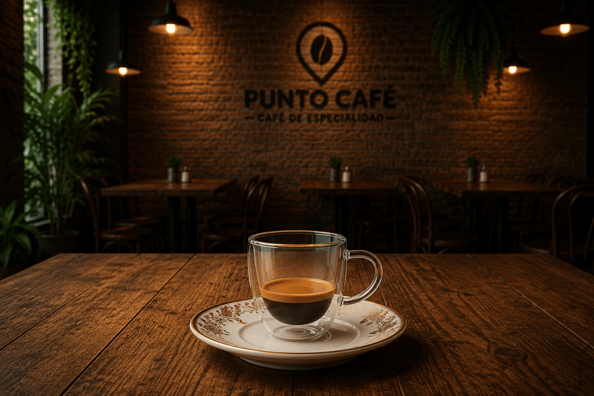
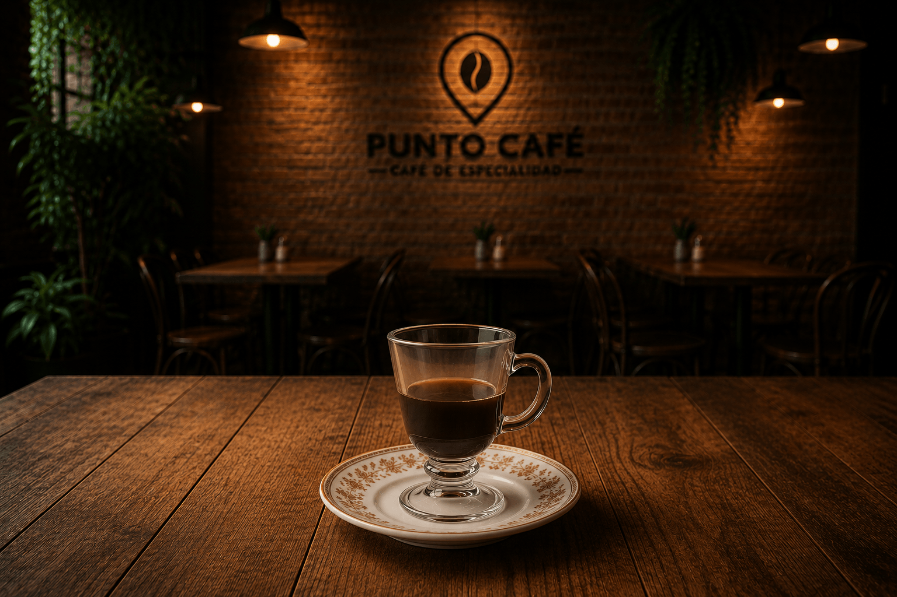
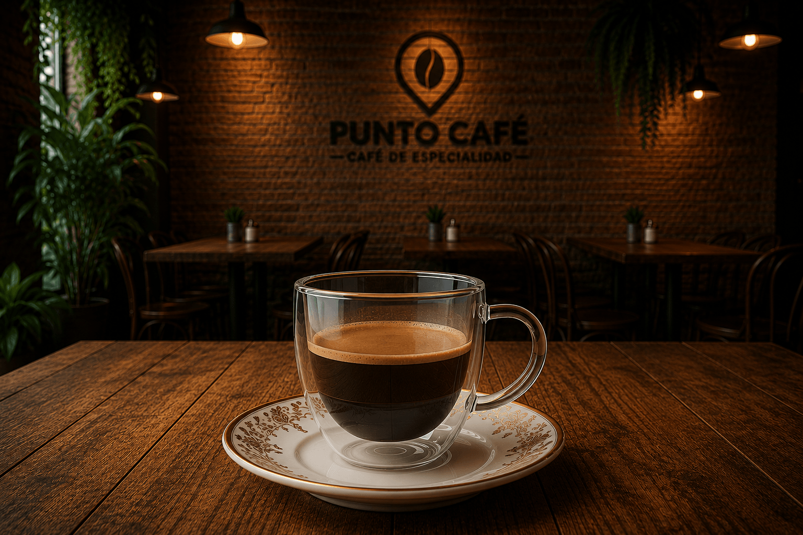

Cada preparación, una experiencia diferente
Desde un intenso ristretto hasta un cremoso cappuccino, cada café posee una identidad propia. Descubrí cómo varían su extracción, volumen, intensidad y composición para encontrar el estilo que mejor se adapta a tu gusto.

Ristretto
Versión más concentrada del espresso. Se prepara utilizando la misma cantidad de café, pero con menos agua, obteniendo una bebida de sabor intenso y textura más densa.

Café Americano
Una preparación suave obtenida al añadir agua caliente a un espresso. Conserva el sabor del café, pero con menor intensidad y un mayor volumen de bebida.

Café Espresso
Un café concentrado preparado al hacer pasar agua caliente a alta presión por café finamente molido. Se caracteriza por su cuerpo intenso y su capa de crema superficial.

Café Doble
También conocido como Doppio, consiste en una doble extracción de espresso. Ofrece mayor cantidad de café, manteniendo una intensidad y aroma más pronunciados.

Café con Leche
Bebida preparada combinando café y leche caliente en proporciones equilibradas. Su sabor es más suave que el espresso y resulta una de las preparaciones más tradicionales.

Cappuccino
Preparación elaborada con espresso, leche caliente y espuma de leche. Se distingue por el equilibrio entre sus tres capas y suele servirse con cacao o canela espolvoreada.